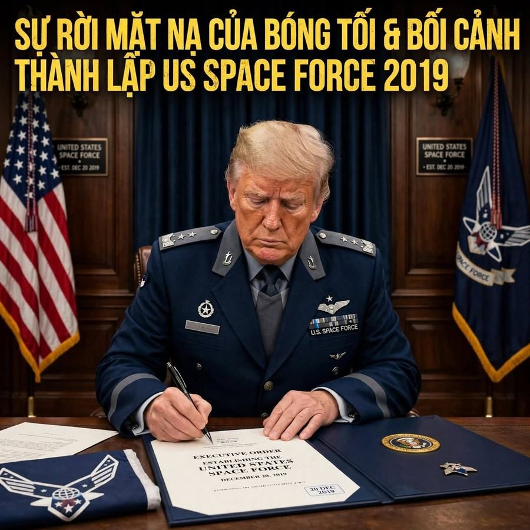
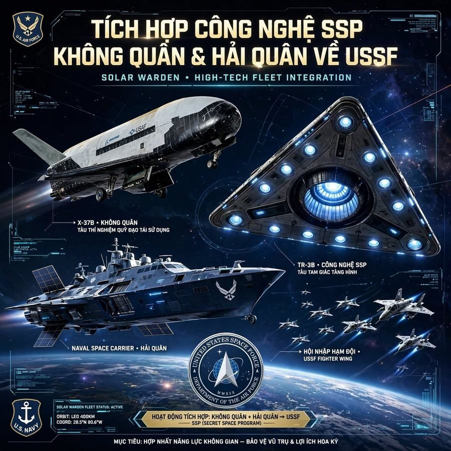
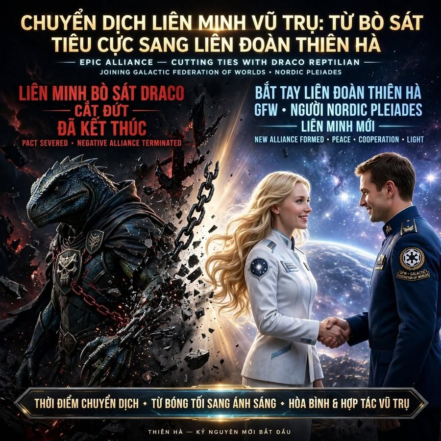
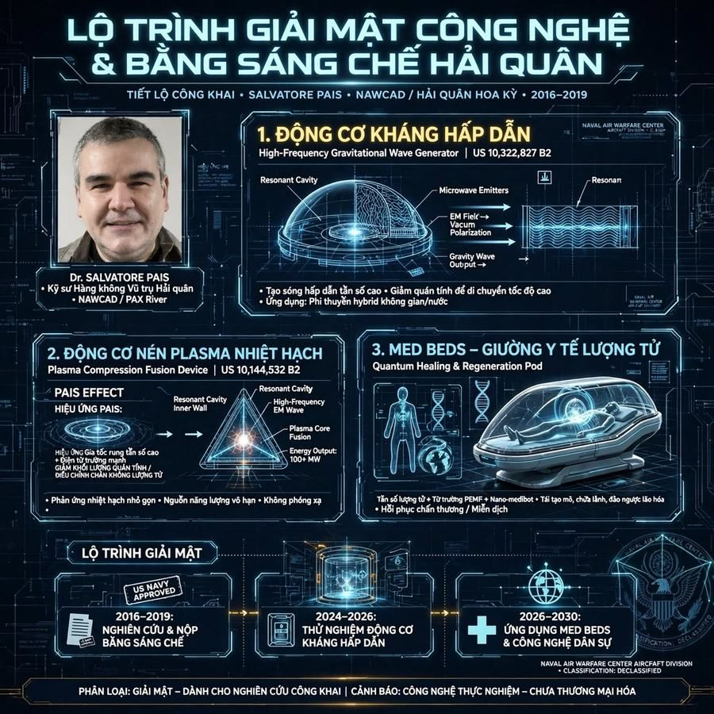
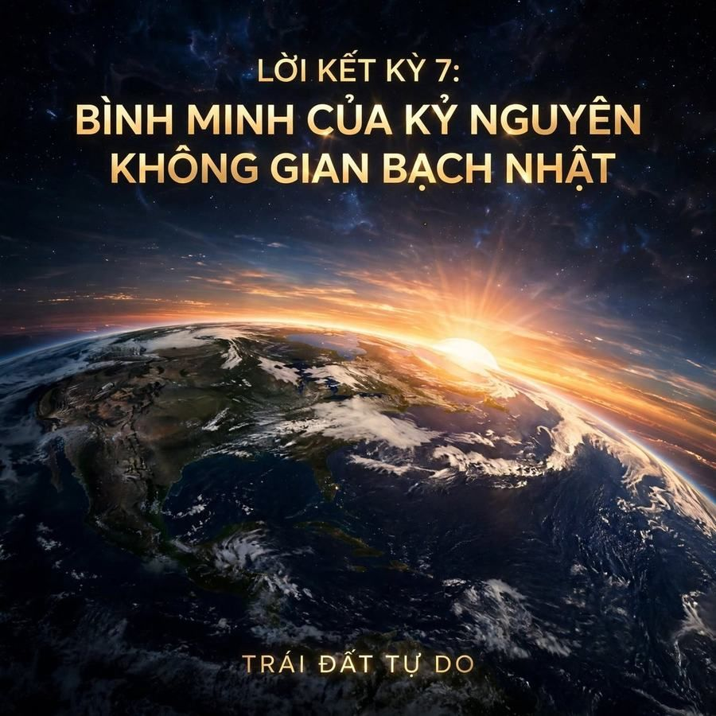

Trang chủ / Chuyên đề 5: Chương Trình Không Gian Bí Mật / Kỳ 47
Chuyên đề 5 · Kỳ 47 / 100
LỰC LƯỢNG KHÔNG GIAN MỸ (US SPACE FORCE) & QUÁ TRÌNH BẠCH NHẬT HÓA GIẢI MẬT (FULL DISCLOSURE)

Ở Kỳ 6, chúng ta đã cùng nhau giải mã sự trỗi dậy của Chương trình Không gian Bí mật Trung Quốc, kế hoạch Khu kinh tế Mặt Trăng 2050 và sự cố tàu Yutu-2 phát hiện chiến hạm cổ đại dẫn đến sứ mệnh hợp tác bí mật giữa Mỹ và Trung Quốc. Hôm nay, chuyến du hành giải mã không gian sẽ đưa chúng ta đến với một bước ngoặt địa chính trị chấn động diễn ra ngay trên bề mặt vào tháng 12 năm 2019: Sự ra đời chính thức của Lực lượng Không gian Hoa Kỳ (United States Space Force — USSF). Tại sao sau hơn 70 năm che giấu và phủ nhận sự tồn tại của các công nghệ đĩa bay hay cuộc chiến không gian, chính quyền Mỹ lại quyết định thành lập Quân chủng thứ 6 hoàn toàn mới? Sự thật đằng sau việc đưa các chương trình bí mật từ trong bóng tối ra ánh sáng (Bạch nhật hóa / Full Disclosure) diễn ra ra sao? Sự chuyển dịch liên minh ngoài hành tinh từ phe Bò sát tiêu cực sang Liên Đoàn Thế Giới Thiên Hà (GFW) diễn ra như thế nào? Và lộ trình giải mật các bằng sáng chế công nghệ năng lượng miễn phí cùng Giường Y Tế Lượng Tử (Med Beds) mang lại cơ hội gì cho nhân loại Trái Đất?
1. SỰ RỜI MẶT NẠ CỦA BÓNG TỐI & BỐI CẢNH THÀNH LẬP US SPACE FORCE
(2019) Tháng 12/2019, Tổng thống Donald Trump chính thức ký sắc lệnh thành lập Lực lượng Không gian Hoa Kỳ (USSF) — quân chủng độc lập đầu tiên được bổ sung vào Quân đội Mỹ sau hơn 70 năm (kể từ khi Không quân Mỹ ra đời năm 1947). A. Công Khai Quân Chủng Không Gian Đầu Tiên Trên Bề Mặt
- Không Còn Là Lý Thuyết Viễn Tưởng: Sự xuất hiện của USSF với logo, quân phục, bộ chỉ huy và ngân sách chính thức đã đập tan hàng thập kỷ phủ nhận của truyền thông dòng chính về sự tồn tại của chiến tranh và công nghệ không gian.
- Mục Tiêu Công Khai & Mục Tiêu Ngầm: Bên cạnh mục tiêu bảo vệ các vệ tinh thương mại, USSF ra đời để chuẩn bị cho việc tích hợp toàn bộ các chương trình không gian bí mật phân rã (dưới Không quân, Hải quân và các nhà thầu tư nhân) về một đầu mối chỉ huy thống nhất. B. Bước Đệm Cho Chiến Lược Bạch Nhật Hóa (Full Disclosure)
- Bổ Song Ngân Sách Hợp Pháp: Việc thành lập USSF giúp chuyển đổi nguồn tiền từ các quỹ dự án đen (Black Budget) sang ngân sách bạch nhật công khai do Quốc hội giám sát, chuẩn bị cho quá trình giải mật từng bước (Declassification).

2. TÍCH HỢP CÔNG NGHỆ SSP KHÔNG QUÂN & HẢI QUÂN VỀ USSF
Trong nhiều thập kỷ, công nghệ không gian của Mỹ bị chia rẽ giữa chương trình Solar Warden của Hải quân và các chương trình đĩa bay/khí cầu của Không quân (AFSPC). A. Hợp Nhất Các Hạm Đội Bí Mật
- Tiếp Quản Cơ Sở Hạ Tầng Không Gian: USSF đã tiếp quản việc quản lý Trạm Chỉ Huy Không Gian, các đài quan sát từ xa, các vệ tinh trinh sát nâng cao và hệ thống phòng thủ quỹ đạo.
- Chuẩn Hóa Các Dòng Tàu Du Hành: Các dòng phi thuyền tác chiến như X-37B hay các phương tiện kháng hấp dẫn hình tam giác (như dòng TR-3B) dần được công khai dưới dạng các thử nghiệm khí động học thế hệ mới. B. Vô Hiệu Hóa Sự Chi Cố Của Các Tập Đoàn Tư Nhân (ICC)
- Tước Quyền Thâu Tóm Của Ma Trận Bóng Tối: USSF ra đời giúp bộ máy chính quyền phục hồi lại quyền kiểm soát đối với các công nghệ vũ trụ, làm suy yếu sự thống trị độc đoán của Liên Minh Các Tập Đoàn Không Gian Tư Nhân (ICC) vốn chuyên lạm dụng công nghệ vì lợi ích nhóm.

3. CHUYỂN DỊCH LIÊN MINH VŨ TRỤ: TỪ BÒ SÁT TIÊU CỰC SANG LIÊN ĐOÀN THIÊN HÀ
Một trong những biến chuyển quan trọng nhất đằng sau sự ra đời của USSF chính là sự thay đổi hoàn toàn về các đối tác ngoài hành tinh. A. Cắt Đứt Các Thỏa Thuận Với Đế Chế Ciakahrr / Draco
- Chấm Dứt Kỷ Nguyên Nô Dịch Bóng Tối: Lực lượng Liên minh Trái Đất bên trong USSF và quân đội đã kiên quyết hủy bỏ các bản hợp đồng ngầm cổ đại ký kết với phe Bò sát và người Xám tiêu cực. B. Liên Minh Chính Thức Với Liên Đoàn Thế Giới Thiên Hà (GFW)
- Hợp Tác Vì Sự Tự Do Của Trái Đất: USSF đã thiết lập mối quan hệ đối tác chiến lược với Liên Đoàn Thế Giới Thiên Hà (Galactic Federation of Worlds) và các sinh mệnh dạng người Nordic (từ Pleiades, Sirius).
- Bảo Vệ Hệ Mặt Trời: GFW hỗ trợ lá chắn năng lượng cao tầng ngoài không gian, giúp USSF quét sạch các tàn dư tiêu cực và thiết lập hòa bình vĩnh viễn trong Hệ Mặt Trời.

4. LỘ TRÌNH GIẢI MẬT CÔNG NGHỆ (FULL DISCLOSURE) & BẰNG SÁNG CHẾ HẢI QUÂN
Quá trình bạch nhật hóa không chỉ dừng lại ở quân sự mà còn mở ra kho báu công nghệ bị che giấu suốt hàng trăm năm. A. Bạch Nhật Hóa Các Bằng Sáng Chế "Kỳ Diệu" (Navy Patents)
- Công Nghệ Kháng Hấp Dẫn & Năng LƯỢNG TỰ DO: Hải quân Mỹ đã chính thức công khai hàng loạt bằng sáng chế do nhà khoa học Salvatore Pais đăng ký: Thiết bị phát trường điện từ cao tần, động cơ kháng hấp dẫn, lò phản ứng tổng hợp hạt nhân nhỏ gọn và lá chắn năng lượng plasma. B. Đưa Công Nghệ Giường Y Tế Lượng Tử (Med Beds) Về Cho Bề Mặt
- Hồi Phục Sức Khỏe Cho Nhân Loại: Lộ trình giải mật chuẩn bị cho việc công khai công nghệ Giường Y Tế Lượng Tử (Med Beds) và công nghệ sinh học tái tạo, giúp nhân loại chữa lành triệt để mọi bệnh tật di truyền và nâng cao chất lượng sống.

5. LỜI KẾT KỲ 7: BÌNH MINH CỦA KỶ NGUYÊN KHÔNG GIAN BẠCH NHẬT
Kỳ 7 của chuyên đề 5 khép lại mang đến niềm tin rực rỡ vào tương lai:
- Bức Màn Che Giấu Đã Rách Vĩnh Viễn: Sự ra đời của USSF và lộ trình Full Disclosure là bằng chứng cho thấy phe bóng tối không thể duy trì ma trận lừa dối. Sự thật đang bùng nổ ra ánh sáng!
- Sẵn Sàng Trở Thành Dân Tộc Không Gian: Nhân loại bề mặt đang từng bước thoát khỏi sự cô lập để chuẩn bị đường đường chính chính bước ra Đa Vũ trụ với vị thế của một dân tộc tự do, có chủ quyền và giàu lòng từ bi!
